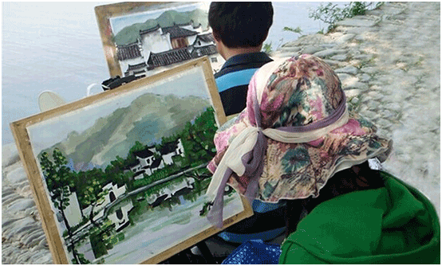
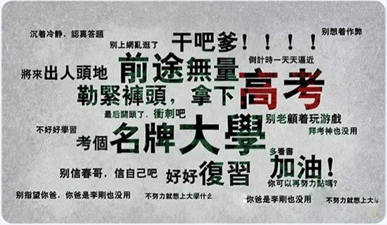

北京市高校
中国传媒大学
影视动画专业承认北京、河北、山西、内蒙古、吉林、江苏、 江西、山东、河南、湖南、广东、广西、四川、甘肃美术统考成绩
北京化工大学
2015年承认重庆、内蒙古美术统考成绩
北京工商大学
承认各省市美术统考成绩，原则上要求省统考成绩(折合成百分制)平均分须在80分及以上(含80分)，单科须在75分及以上(含75分)。
北京联合大学
2015年承认各省市美术统考成绩
中华女子学院
环境设计(室内陈设设计)、服装与服饰设计、视觉传达设计专业面向北京、河北、山西、内蒙古、江苏、山东、河南、湖南、四川、陕西计划招生155人，承认各省美术统考成绩
北京农学院
2015年承认北京山西美术统考成绩
北京城市学院
2015年承认各省市美术统考成绩
天津市高校
天津工业大学
动画专业承认各省美术统考成绩
天津师范大学
在上海、重庆、内蒙古、黑龙江、福建、河南、湖南、广东、海南、四川、贵州、江西、广西、陕西、青海、新疆、西藏等省(区、市)使用艺术类省级统考(或联考)成绩录取，考生无需参加校考。
全部艺术类专业在北京、山西、辽宁、吉林、江苏、浙江、安徽、山东、湖北、甘肃、云南、宁夏等省(区、市)使用我校校考成绩录取。
天津科技大学
2015年承认湖南美术统考成绩
天津理工大学
动画专业承认各省美术统考成绩
天津商业大学
2015年承认各省美术统考成绩
天津外国语大学
承认各省美术统考成绩
天津农学院
承认各省美术统考成绩
河北高校
河北师范大学
承认各省美术统考成绩
燕山大学
承认河北、黑龙江美术统考成绩
河北工业大学
承认河北、天津美术统考成绩
华北科技学院
承认各省美术统考成绩
石家庄经济学院
承认各省美术统考成绩
石家庄学院
承认河北省美术统考成绩
衡水学院
承认安徽、福建、河北、湖北、江西、宁夏、山东、山西、浙江、江苏、新疆美术统考成绩，
邢台学院
承认部分美术统考成绩
山西高校
山西大学
承认各省美术统考成绩
太原理工大学
除山东省外，其他招生省份承认美术统考成绩
中北大学
承认各省美术统考成绩
山西财经大学
承认各省美术统考成绩
山西农业大学
承认各省美术统考成绩
太原工业学院
承认各省美术统考成绩
沂州师范学院
承认各省美术统考成绩
山西传媒学院
天津、内蒙古、浙江、福建、河南、广西和四川等省份的动画专业，使用当地美术类统考成绩。
内蒙古高校
内蒙古师范大学
承认各省美术统考成绩
内蒙古工业大学
承认各省美术统考
内蒙古农业大学
承认各省美术统考成绩
内蒙古民族大学
承认各省美术统考成绩
内蒙古科技大学
承认各省美术统考成绩
内蒙古科技大学包头师范学院
承认各省美术统考成绩
呼和浩特学院
承认各省美术统考成绩
河套学院
承认各省美术统考成绩
黑龙江高校
哈尔滨工业大学
承认黑龙江、吉林、辽宁、河北、北京、山东、江苏美术统考成绩
东北林业大学
承认黑龙江、吉林、辽宁、河南、河北、北京、山东、湖南和西藏美术统考成绩
黑龙江大学
承认各省美术统考成绩
牡丹江师范学院
承认各省美术统考成绩
绥化学院
承认各省美术统考成绩
黑河学院
承认各省(不含山东省)美术统考成绩
吉林高校
吉林艺术学院
艺术设计(二年制专科)、影视动画(二年制专科)承认吉林美术统考
吉林师范大学
承认内蒙古、吉林美术统考成绩
北华大学
承认湖南、吉林美术统考成绩
吉林动画学院
承认各省美术统考成绩
吉林建筑大学
承认吉林、浙江、湖南、湖北、河南、甘肃、内蒙古、江西、陕西美术统考成绩
长春工业大学
承认湖南、吉林美术统考成绩
通化师范学院
承认吉林、山东、安徽、 河北、江西、广西、 江苏、山西、内蒙古美术统考成绩
吉林工程技术师范学院
承认部分省份美术统考成绩
吉林农业大学
承认各省美术统考成绩可先参考2013年招生简章
长春建筑学院
承认吉林、江苏、浙江、湖北、河南、河北、辽宁、黑龙江、天津、山东、新疆、江西美术统考成绩
东北师范大学人文学院
承认吉林、内蒙古、辽宁、浙江、河北美术统考成绩
辽宁高校
大连工业大学
承认部分省份美术统考成绩(2013年承认湖南、辽宁、内蒙古美术统考成绩)
辽宁师范大学
2015年承认各省市美术统考成绩，招生省份为辽宁、湖北、山东、内蒙古、黑龙江、河北、山西
沈阳建筑大学
2015年承认各省市美术统考成绩
考沈阳理工大学
2015年承认部分省份美术统考成绩(2013年承认辽宁、吉林、河北、湖南美术统考)
大连大学
承认湖南、辽宁美术统考成绩
大连交通大学
承认各省美术统考
大连民族学院
承认内蒙古、辽宁、湖南、辽宁美术统考成绩
鞍山师范学院
辽宁、河南、河北、湖南、湖北、浙江、山东等七个省美术统考成绩
大连海洋大学
承认辽宁美术统考成绩(因为2014年该校艺术类招生简章未公布，可能该校今年承认各招生省份美术统考成绩)
辽宁科技大学
承认辽宁、吉林、内蒙古美术统考成绩
辽宁石油化工大学
承认各省美术统考成绩
辽宁工程技术大学
承认各省美术统考成绩
辽东学院
承认各省(除云南、江西)美术统考成绩
大连艺术学院
除黑龙江、河南、广西、江西外，其他招生省份承认美术统考成绩
陕西高校
陕西师范大学
承认四川、陕西美术统考成绩
陕西科技大学
承认部分省份美术统考成绩(2013年承认黑龙江、浙江、山东、河南、陕西美术统考成绩)
西北大学
承认各省美术统考成绩
西安科技大学
承认各省美术统考成绩
西安石油大学
承认山东、陕西美术统考成绩
宝鸡文理学院
承认陕西、宁夏、青海、内蒙古美术统考成绩
陕西理工学院
承认各省美术统考成绩
西安邮电大学
承认部分省份美术统考成绩
西安财经学院
承认各省美术统考成绩
安康学院
承认陕西、河南、江西美术统考成绩
商洛学院
承认陕西、山东、河南、安徽、湖南、江苏、山西等省美术统考成绩
榆林学院
承认各省美术统考成绩
西安交通大学城市学院
承认河北、江苏、福建、山东、河南、陕西、新疆、山西美术统考成绩
西安欧亚学院
承认各省美术统考成绩
西安外事学院
承认各省美术统考成绩
西安培华学院
承认各省美术统考成绩
西京学院
承认各省美术统考成绩
西安翻译学院
承认各省美术统考成绩
甘肃高校
兰州大学
承认北京、天津、河北、内蒙古、江苏、安徽、山东、河南、湖南、重庆、四川、陕西、甘肃美术统考成绩
西北民族大学
除黑龙江、河南、贵州、山东、新疆、辽宁、广西、山西、内蒙古、宁夏等使用校考，其他各省使用省级美术类统考专业成绩
兰州交通大学
举行专业课校考的省份专业课成绩以我校校考成绩计分，不举行专业课校考的省份以当地统考成绩计分
青海高校
青海民族大学
视觉传达设计(广告设计方向)承认山东、青海、湖北、河南、甘肃美术统考成绩
宁夏高校
宁夏大学
我校组织考试的省(自治区、直辖市)，专业课成绩以校考成绩为准;未组织校考的省(自治区、直辖市)，专业课成绩以省统考成绩为准。
北方民族大学
2015年我校在山东、山西、河北、广西、新疆、云南、贵州、江西、等8省(区)设立艺术类专业考点，自行组织专业考试，以上省(区)的考生必须在我校 设立的艺术类考点报名参加专业考试。其他未组织校考的省(市、区)，我校认可省级统考成绩录取。详见2015年招生简章
新疆高校
喀什师范学院
承认新疆区外各招生省份美术统考成绩
湖北高校
湖北工业大学
承认北京、上海、湖南美术统考成绩
中南民族大学
承认湖南、四川美术统考成绩
中南财经政法大学
承认湖北、山东、江苏、江西、湖南美术统考成绩
武汉工程大学
承认湖北、福建、湖南、广东美术统考成绩
三峡大学
承认湖北、湖南、山西、福建、辽宁、广东美术统考成绩
黄冈师范学院
承认湖南、湖北、广东、福建、新疆美术统考成绩
湖北民族学院
美术类本科专业面向湖北、湖南、山东、河北、河南招生，认可各省统考(联考)成绩
湖北经济学院
承认湖北、湖南、河南、山东、江西、浙江、福建、广东美术统考成绩
湖北科技学院
承认湖北、湖南、内蒙古、重庆、广东美术统考成绩
湖北工程学院
承认湖北、湖南美术统考成绩
湖南高校
湘潭大学
承认北京、湖南美术统考成绩
长沙理工大学
承认辽宁、浙江、湖南、广东美术统考成绩
湖南科技大学
承认各省美术统考成绩
湖南城市学院
承认湖北、湖南、广东美术统考成绩
衡阳师范学院
承认各省美术统考成绩
湖南第一师范学院
承认各省美术统考成绩
湖南涉外经济学院
承认各省美术统考成绩
山东高校
山东艺术学院
绘画(鉴定与修复)本科专业文化课成绩达到山东省艺术类本科文化最低控制线的线上考生，按山东省美术类统考专业成绩择优录取。
山东大学
产品设计专业承认各省美术统考成绩
青岛科技大学
承认山东、湖北、新疆、内蒙古美术统考成绩
聊城大学
承认安徽、湖南、山东美术统考成绩
济南大学
承认各省美术统考成绩
山东科技大学
承认各省美术统考成绩
山东财经大学
承认山东、江苏、浙江、山西、陕西、福建、河南、河北、辽宁、黑龙江、四川美术统考成绩
临沂大学
承认山东、江苏、浙江、河南、河北美术统考成绩
泰山学院
承认江苏、福建、山东美术统考成绩
枣庄学院
承认河南、河北、安徽、山东美术统考成绩
齐鲁师范学院
承认山东、河北美术统考成绩
烟台南山学院
承认各省美术统考成绩
曲阜师范大学杏坛学院
承认各省美术统考成绩
聊城大学东昌学院
承认各省美术统考成绩
安徽高校
安徽师范大学皖江学院
除摄影、戏剧影视美术设计专业外，其他专业承认安徽美术统考成绩。
江苏高校
南京艺术学院
绘画、公共艺术、环境设计、视觉传达设计、服装与服饰设计、产品设计、戏剧影视美术设计动画、数字媒体艺术承认江苏美术统考成绩。
南京师范大学
绘画、视觉传达设计、环境设计(环境艺术方向)、环境设计(装饰方向)、环境设计(展示方向)产品设计(玩具方向)、动画专业承认江苏美术统考成绩
南京工业大学
承认浙江、江苏美术统考成绩
南通大学
承认浙江、江苏美术统考成绩
南京财经大学
承认江苏、山东、浙江美术统考成绩
常州工学院
承认各省美术统考成绩
盐城师范学院
承认各省美术统考成绩
盐城工学院
承认各省美术统考成绩
上海高校
上海视觉艺术学院
美术类专业(除SIVA-德稻实验班之外)承认上海、黑龙江、辽宁、四川、山西、重庆、广东、江西、贵州、河南、河北美术统考成绩
上海师范大学
承认江苏、浙江、安徽、江西、山东、湖北美术统考成绩
上海交通大学
承认上海、江苏、浙江美术统考成绩
同济大学
承认上海、北京、江苏、浙江、山东、湖南、广东、四川美术统考成绩
上海理工大学
承认各各省美术统考成绩
上海第二工业大学
承认上海、浙江、江苏、四川美术统考成绩
上海海事大学
承认上海、江苏省、浙江省、安徽省美术统考成绩
上海工程技术大学
承认上海、江苏、浙江、安徽、江西、河南、湖北美术统考成绩
上海应用技术学院
承认上海、浙江、江苏、江西、河南、山东、安徽、广东美术统考成绩
上海商学院
承认各各省美术统考成绩
上海建桥学院
承认各各省美术统考成绩
上海杉达学院
承认上海、江苏、河南、浙江、安徽美术统考成绩
浙江高校
浙江工业大学
承认浙江、山东、江苏、湖南、河北美术统考成绩
浙江大学
承认各省美术统考成绩
温州大学
承认浙江、山东、湖南美术统考成绩
浙江工商大学
承认各省美术统考成绩
浙江科技学院
承认浙江、黑龙江、河北、江苏、安徽、天津、辽宁、福建、山东、江西和广西等11个省美术统考成绩
绍兴文理学院
承认各省美术统考成绩
嘉兴学院
承认浙江、江苏、湖南、安徽、河南美术统考成绩
台州学院
承认浙江、江苏美术统考成绩
福建高校
厦门大学
承认各省美术统考成绩
福州大学
承认吉林、河南、天津、四川、重庆、陕西、内蒙古、海南美术统考成绩
华侨大学
承认福建、江苏、山东、广东美术统考成绩
集美大学
承认各省美术统考成绩
泉州师范学院
承认福建、山东、广东、浙江、河北、湖南、湖北、重庆美术统考成绩
三明学院
承认河北、陕西、山西、江西、山东、河南、湖南、广东、贵州、甘肃美术统考成绩
武夷学院
承认各省美术统考成绩
福州外语外贸学院
承认各省美术统考成绩
江西高校
江西财经大学
承认江西、辽宁、云南、甘肃美术统考成绩
井冈山大学
承认江西省、上海市、湖南省美术统考成绩
江西理工大学
承认各省美术统考成绩
广东高校
汕头大学
承认广东、江苏、浙江、湖北、山东、四川、广西、江西、河南、安徽美术统考成绩
广东工业大学
承认各省美术统考成绩
广东外语外贸大学
承认黑龙江、浙江、福建、江西、湖北、湖南、广东、广西、海南和四川美术统考成绩
韩山师范学院
承认各省美术统考成绩
五邑大学
承认各省美术统考成绩
惠州学院
承认各省美术统考成绩
嘉兴学院
承认广东美术统考成绩
广东第二师范学院
承认各省美术统考成绩
广东石油化工学院
承认各省美术统考成绩
仲恺农业工程学院
承认各省美术统考成绩
广西高校
广西师范学院
承认广西、广东美术统考成绩
广西财经学院
承认各省美术统考成绩
广西科技大学
承认各省美术统考成绩
钦州学院
承认广西、湖南、江西、江苏、山东、河南、河北、云南、新疆美术统考成绩
贺州学院
承认广西、河北、山东、湖南美术统考成绩
广西民族师范学院
承认部分省份美术统考成绩
海南高校
琼州学院
承认各省美术统考成绩
三亚学院
承认各省美术统考成绩
海口经济学院
承认各省美术统考成绩
重庆高校
重庆交通大学
承认各省美术统考成绩
长江师范学院
承认部分美术统考成绩
重庆文理学院
承认部分美术统考成绩
重庆三峡学院
承认重庆、福建、新疆、浙江、宁夏、四川、河南、内蒙古、海南美术统考成绩
重庆人文科技学院
承认各省美术统考成绩
四川高校
四川师范大学
承认各省美术统考成绩
西华师范大学
承认各省美术统考成绩
西华大学
承认部分美术统考成绩
西南民族大学
承认四川、黑龙江、广东、湖北、湖南、重庆、西藏、宁夏和新疆
四川传媒学院
承认贵州、湖北、吉林、黑龙江、天津、河北、重庆、陕西、江苏、山西、北京、新疆、广东、内蒙古、云南、浙江、福建、湖南、广西、四川、青海、甘肃美术统考成绩
四川农业大学
承认各省美术统考成绩
成都学院
承认各省美术统考成绩
成都信息工程学院
承认各省美术统考成绩
四川文理学院
承认各省美术统考成绩
四川理工学院
承认部分省份美术统考成绩：
贵州高校
铜仁学院
承认各省美术统考成绩
云南高校
云南大学
承认部分美术统考成绩
云南民族大学
承认部分美术统考成绩：
云南财经大学
承认云南、山东、湖北、河北、江苏、浙江、福建、四川、重庆、陕西美术统考成绩
昆明理工大学
承认部分美术统考成绩
玉溪师范学院
除广西外，其他招生省份承认美术统考成绩
昆明学院
承认各省美术统考成绩
曲靖师范学院
承认各省美术统考成绩
大理学院
承认各省美术统考成绩
楚雄师范学院
承认云南美术统考成绩
文山学院
承认各省美术统考成绩
西藏高校
西藏大学
承认各省美术统考成绩
